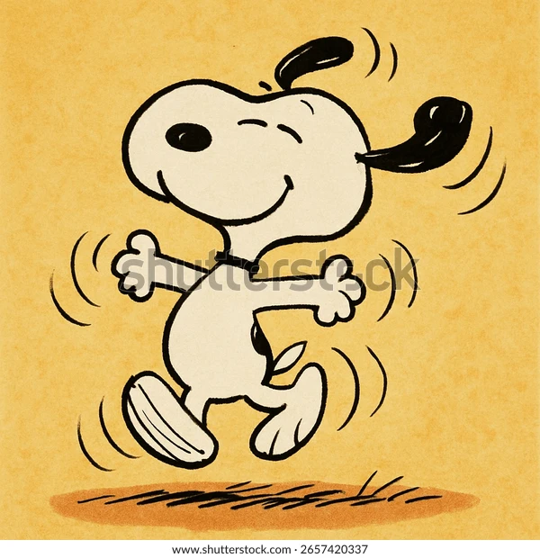
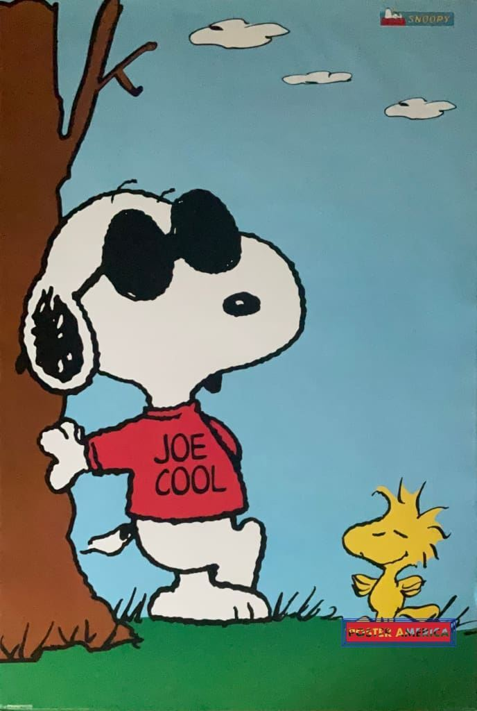
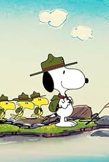

sobre Snoopy

Snoopy nació en la granja Daisy Hill y fue creado por Charles M. Schulz para la tira Peanuts; al inicio no estaba claro que su dueño fuera Carlitos, aunque con el tiempo se confirmó. Antes perteneció a Lila, pero al mudarse ella a un lugar donde no aceptaban perros, Snoopy fue devuelto y después adoptado por Carlitos. Es imaginativo y peculiar: duerme sobre su caseta por claustrofobia, ama la pizza y la cerveza de raíz, es amigo de Woodstock y adopta múltiples personalidades como el “As de la Aviación” En una serie de tiras cómicas de 1968 se revela que el cumpleaños de Snoopy es el 10 de agosto
Ver página oficialInformación
Habilidades o características
- Es un beagle
- coger pompas de jabón con la boca
- escuchar a las galletas de chocolate
- escuchar a las galletas de chocolate
- es capaz de sentir las emociones que tienen las galletas de chocolate
- hace el truco de "el gato de chesire"
Top 3 momentos icónicos
- Snoopy First Walked Upright in 1956
- Snoopy's First Appearance Came When He Was Just a Puppy
- Snoopy Meets Woodstock
Ficha técnica
| Edad: | Peso: | Estatura: | Primera aparición: | Debilidades: | Alias: |
|---|---|---|---|---|---|
| joven | 6/7 kg | 25/35 cm | 4 de octubre de 1950 |
|
|
Registro de verdaderos fans
Únete a nuestra comunidad de fans de snoopy.
Galería



